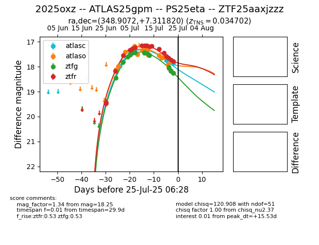

Target 2025oxz at 2025-07-25 06:28, see:
FINK: fink-portal.org/2025oxz
Lasair: lasair-ztf.lsst.ac.uk/objects/2025oxz
ALeRCE: alerce.online/object/2025oxz
TNS: wis-tns.org/object/2025oxz
YSE: ziggy.ucolick.org/yse/transient_detail/2025oxz
alt names
ZTF25aaxjzzz (ztf,fink)
2025oxz (tns,yse)
ATLAS25gpm (atlas)
PS25eta (panstarrs)
coordinates:
equatorial (ra, dec) = (348.9072,+7.31182)
galactic (l, b) = (85.5277,-48.47783)
photometry
last atlasc=17.87, atlaso=17.92, ztfg=18.25, ztfr=17.79
4 atlasc, 13 atlaso, 20 ztfg, 18 ztfr detections
